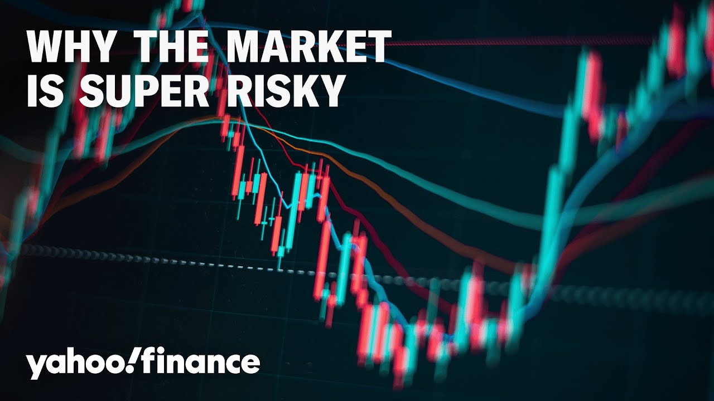

【为什么你不应该逢低买入】
Summary: Despite market volatility and tariff uncertainty, large-cap stocks have performed well, with the market recovering as if unchanged. Brad Clapm, a senior portfolio manager, warns against blindly buying dips, as the economic landscape has shifted post-quantitative easing, making valuations rich and the market risky. He advocates for disciplined investing, focusing on quality over growth, and highlights the risks of concentrated investments in thematic trends like AI.
摘要： 尽管市场波动和关税不确定性持续，大盘股表现相对较好，市场似乎已恢复如常。高级投资组合经理布拉德·克拉普姆警告不要盲目逢低买入，因为量化宽松后的经济环境已发生变化，估值偏高，市场风险加大。他主张纪律性投资，注重质量而非增长，并指出集中于人工智能等主题趋势的投资风险。

⏱️ Estimated Reading Time: 12 min
[Music] Well, despite a volatile start to the year and continuing tariff uncertainty, large cap stocks have performed relatively well.
[音乐] 尽管今年开局波动且关税不确定性持续，大盘股表现相对较好。
Our next guest says that the market has recovered as if nothing has changed.
我们的下一位嘉宾表示，市场已经恢复，仿佛一切如常。
We're navigating how to play large caps with the Yahoo Finance Playbook.
我们正在探讨如何利用雅虎财经策略应对大盘股。
Joining us now, Brad Clapm, senior portfolio manager from the Mcquaryi large cap growth team.
现在加入我们的是麦克夸里大盘股增长团队的高级投资组合经理布拉德·克拉普姆。
He manages the Mquari focused large growth ETF with $220 million in assets under management.
他管理着麦克夸里重点大盘增长ETF，管理资产达2.2亿美元。
And so not just large cap but large cap growth specifically.
因此，不仅是大盘股，更具体地说是大盘增长股。
Brad, it's good to see you. Thanks for being here.
布拉德，很高兴见到你。感谢你的到来。
You too.
我也是。
So I would ask you first of all about the round trip that the markets have taken, right?
那么，我首先想问你关于市场的往返走势，对吧？
The big dip on tariffs, the comeback from tariffs.
关税导致的大跌，以及关税后的反弹。
Now we're pretty much flat on the year more or less.
现在我们基本持平于年初水平。
That's kind of true for large cap growth also.
大盘增长股也基本如此。
Yeah.
是的。
Um should there should that have been the trajectory?
嗯，这应该是市场的走势吗？
What what is the market factoring in the full picture?
市场在全面考虑什么因素？
I guess yeah, unfortunately I don't get a decided trajectory, but I can analyze it and I I think it's I think what we've seen is investors coming back to the same playbook that they've been familiar with since November 2008 when we started quant quantitative easing is that whenever there's some dispute or disagreement, you just buy the dip.
我想是的，不幸的是，我无法确定明确的走势，但我可以分析它。我认为我们看到的是投资者回到了自2008年11月量化宽松开始以来熟悉的策略，即每当出现争议或分歧时，就逢低买入。
Something will go the right way of the market.
市场总会朝着有利的方向发展。
And unfortunately, what I believe is that's no longer the case.
但不幸的是，我认为情况已不再如此。
We had from November 2008 to really March of 2022 when we started quantitative easing where I think the rule book has changed.
从2008年11月到2022年3月量化宽松期间，我认为规则已经改变。
We had zero rate policy going to higher rates.
我们从零利率政策转向了更高的利率。
We had no inflation, a Goldilocks inflationary scenario going to now sort of anchored embedded inflation.
我们从无通胀、温和通胀情景转向了现在某种锚定的嵌入式通胀。
We had globalization now going to isolationism.
全球化现在转向了孤立主义。
And we're still trying to play that playbook that we had over the last 15 plus years.
而我们仍在试图沿用过去15年多的策略。
I think that's dangerous territory.
我认为这是危险的领域。
So what I would say is yeah we had this emotion that p pulled the market lower and we had mo emotion that pulled the market up.
所以我想说的是，是的，我们有情绪将市场拉低，也有情绪将市场拉高。
Expect that for the next five years at least is what I would say there's going to be a lot of chop.
我认为至少在接下来的五年里，市场将会有很多波动。
So you you would actually define Brad did I read this right? You would define the market as super risky here.
所以，布拉德，我理解得对吗？你认为当前市场风险极高。
Talk me through that.
请详细解释一下。
Yeah.
是的。
Yeah.
是的。
I think from a from a super risky standpoint, it goes back to that narrative I just presented where I think you know 12 or 15 years ago coming out of global financial crisis valuations were very attractive in the market broadly and so I would say at that time if you had a dollar to spend put it in the market just I think that's why passive ETFs became so popular just invest a dollar and to get it in the market and unfortunately we've kind of squeezed all the good out of that and now valuations are pretty rich um broadly I think in and for growth stocks.
我认为从极高风险的角度来看，这回到了我刚才提到的叙述。12或15年前，全球金融危机后，市场估值普遍非常有吸引力。所以我认为，当时如果你有一美元可以投资，就投入市场。我想这就是被动ETF如此受欢迎的原因，只需投入一美元进入市场。不幸的是，我们已经榨干了其中的好处，现在估值普遍偏高，尤其是增长股。
So what I how we're handling that is we're we're using valuation discipline um we're putting quality before growth or we're we're just being very using a lot of discretion.
因此，我们的应对方式是运用估值纪律，将质量置于增长之前，或者非常谨慎地操作。
I think just blindly throwing market money into a sort of concentrated market is just risky at this point.
我认为在当前阶段，盲目将资金投入高度集中的市场是非常危险的。
Well, it's it's interesting because I look at some of your top holdings and we got what five of the mag seven in those are the top holdings.
嗯，这很有趣，因为我看到你的一些主要持仓中有五家“七巨头”公司。
Microsoft, Nvidia, Apple, Amazon, and Alphabet.
微软、英伟达、苹果、亚马逊和Alphabet。
Um, you know, which I think you can argue given earnings outlook that they're not the valuations aren't all rich, but I am curious why that I mean large cap growth you only have so many choices.
嗯，考虑到盈利前景，你可以说它们的估值并不都偏高，但我好奇的是，大盘增长股的选择本就有限。
I understand that.
我理解这一点。
But why sort of go into that concentration that's pretty close to what we see for example in the S&P 500?
但为什么要如此集中，接近于标普500的配置？
Yeah.
是的。
No, I think that's right.
不，我认为这是对的。
I I think the first deciding factor is we have to decide how do these companies get to this size of market cap.
我认为第一个决定因素是，我们必须弄清楚这些公司是如何达到如此大的市值的。
Like do they deserve it?
它们是否配得上？
And we would say most of the Magnificent 7 do.
我们认为“七巨头”中的大多数确实如此。
We have disputes about the quality of business with like a Tesla.
我们对特斯拉等公司的业务质量有争议。
Um we we don't have a position in Tesla.
嗯，我们没有特斯拉的持仓。
But we think it's an automotive company with the software layer, not a technology company that happens to make cars.
但我们认为它是一家带有软件层的汽车公司，而不是一家恰好生产汽车的科技公司。
So we're not interested in paying wild valuations for it.
因此，我们不愿为其支付过高的估值。
But I think a lot of these Magnificent 7 got there because these are some of the most phenomenal businesses we've ever seen.
但我认为“七巨头”中的许多公司之所以能达到这一高度，是因为它们是我们见过的最出色的企业。
The risk now and why we have um you know taken different views of the quality of those businesses now is that they're all highly correlated to one thematic and that thematic is cloud compute and AI.
现在的风险以及为什么我们对这些企业的质量持不同看法，是因为它们都与一个主题高度相关，即云计算和人工智能。
So we're not thrown off by the fact that the market is concentrated, but we call it blind concentration into thematic versus what we're trying to do with the McCory focus product is do intentional concentration.
因此，我们并未因市场集中而动摇，但我们称之为盲目集中于主题，而麦克考里重点产品则试图进行有意的集中。
Really think through how a portfolio comes together.
真正思考投资组合如何构建。
We don't want to give an investor a beta portfolio or AI thematic portfolio if they're trying to invest in a quality growth portfolio.
如果投资者希望投资于高质量增长组合，我们不愿给他们一个贝塔组合或人工智能主题组合。
And to me that describes this risk in the market.
对我来说，这描述了当前市场的风险。
All of a sudden we ended up with a group of great names.
突然间，我们拥有了一组伟大的名字。
That's right.
没错。
But the fact is they're all highly correlated to a single thematic.
但事实是它们都与单一主题高度相关。
That's risky and I think people need to really think through the process of what they own in their in their passive investments.
这是有风险的，我认为人们需要认真思考他们的被动投资中持有什么。
So there is risk Brad, but I know I know you think there's also opportunity high level broadly.
所以，布拉德，风险确实存在，但我知道你认为总体上也有机会。
I know one area you continue to like data center REITs.
我知道你仍然看好数据中心房地产投资信托基金。
How come?
为什么？
Yeah, I think you have to be careful with the REITs.
是的，我认为对房地产投资信托基金必须谨慎。
First of all, there there's not a lot of differentiation in sort of the retail REITs.
首先，零售房地产投资信托基金之间的差异化不大。
um they're very popular right now because we're obviously expanding the capacity that we need for compute.
嗯，它们现在非常受欢迎，因为我们显然在扩大计算所需的容量。
The name that we think is just exceptional quality in the repace is a company called Equinex, EQIX.
我们认为在房地产投资信托基金中质量卓越的公司是Equinix（EQIX）。
And the reason why we like it is they just have the most phenomenal locations in the world.
我们喜欢它的原因是它们拥有世界上最佳的位置。
They have what's called cross connects and interconnects.
它们拥有所谓的交叉连接和互联。
So if let's just say you're Nike and you want to connect with the Salesforce platform, you want to be in a lo a location together so you can have that low latency, you can speed it up, you have this privacy to it.
比如说，如果你是耐克，想要连接到Salesforce平台，你希望位于同一位置，以实现低延迟、加速并确保隐私。
And believe it or not, that's called the network effect.
信不信由你，这就是所谓的网络效应。
If you can get all these wonderful businesses in the same location and they're all cross-connecting to each other, no one's going to jump ship and move to across the street.
如果你能让所有这些优秀的企业位于同一位置并相互交叉连接，没有人会跳槽搬到街对面。
It's just impossible.
这是不可能的。
So we love the network effects here and I think what we're going to find this is our hope and and why we like the business is they're going to take that advantage of locations and what they're doing with those crossconnects and as some of these AI training m models get put into production same thing you want low latency you want to be on the edge you want to be connected um with your partners and we think they have a real competitive advantage to really emphasize their value as we move into productive AI Brad to see you today especially on set.
因此，我们喜欢这里的网络效应。我们认为这是我们的希望，也是我们喜欢这家企业的原因。它们将利用位置优势及其交叉连接的作用。随着一些人工智能训练模型投入生产，同样需要低延迟、边缘计算以及与合作伙伴的连接。我们认为它们具有真正的竞争优势，能够在我们进入生产性人工智能时凸显其价值。布拉德，今天很高兴见到你，尤其是在现场。
Thanks for coming in.
感谢你的到来。
Yeah, thank you.
是的，谢谢。